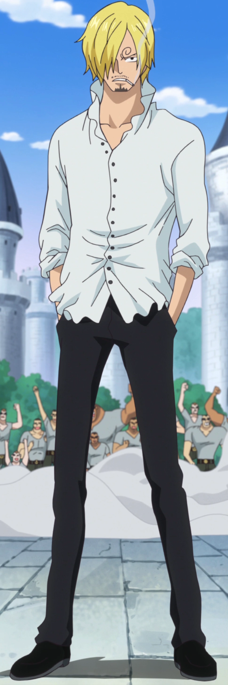

Awal Mula

One Piece adalah sebuah seri manga Jepang yang ditulis dan
diilustrasikan oleh Eiichiro Oda. Manga ini telah
dimuat di majalah Weekly Shōnen Jump milik Shueisha sejak tanggal 22
Juli 1997, dan telah dibundel menjadi 102 volume, setidaknya untuk
saat ini. mengisahkan petualangan Monkey D. Luffy, seorang anak
laki-laki yang memiliki kemampuan tubuh elastis seperti karet
setelah memakan Buah Iblis secara tidak disengaja. Manga ini telah
diadaptasi menjadi sebuah serial animasi yang diproduksi oleh Toei
Animation, yang mulai tayang di Jepang pada tahun 1999. Versi
manganya telah dilisensi untuk dirilis dalam bahasa Inggris di
Amerika Utara dan Britania Raya oleh Viz Media dan di Australia oleh
Madman Entertainment. Versi animenya telah dilisensi oleh 4Kids
Entertainment untuk perilisan versi bahasa Inggris di Amerika Utara
pada tahun 2004, sebelum lisensi tersebut dicabut dan kemudian
diakuisisi oleh Funimation pada tahun 2007. One Piece telah menerima
pujian atas alur cerita, gambar, karakterisasi, dan humornya.
Beberapa volume dari manga ini telah memecahkan rekor penerbitan,
termasuk cetakan awal tertinggi dari buku apa pun di Jepang. Situs
web resmi untuk manga One Piece karya Eiichiro Oda mengumumkan bahwa
manga ini telah meraih Guinness World Record untuk kategori "salinan
terbanyak yang diterbitkan untuk seri buku komik yang sama oleh
seorang penulis tunggal". One Piece juga menjadi manga terlaris
selama sepuluh tahun berturut-turut pada tahun 2017.
One Piece merupakan manga terlaris sepanjang sejarah Shonen Jump.
Manga ini juga yang menyebabkan total penjualan Shonen Jump naik
pada 11 tahun terakhir ini. Volume 25 memegang rekor penjualan manga
di Jepang, dengan 2.630.000 unit terjual pada cetakan pertama. Dan
volume 46 mencapai lebih dari 140.000.000 unit terjual dan merupakan
manga tercepat yang mencapai total penjualan 100.000.000.
Sinopsis
22 tahun yang lalu, sang Raja bajak laut Gol D. Roger, dieksekusi.
Namun menjelang ajal nya dia mengungkapkan harta karun nya kepada
semua orang, yaitu One Piece, yang tersembunyi disuatu tempat di
Grand Line. Ini menginspirasi orang untuk menjadi bajak laut dan
berlayar menuju tempat harta karun tersebut, dan itu memulai Zaman
Bajak Laut yang Hebat.

Dua belas tahun kemudian, seorang anak laki-laki dari East Blue
bernama Monkey D. Luffy bermimpi menemukan One Piece, tetapi
kehilangan kemampuan berenang setelah memakan Buah Iblis memberinya
kemampuan untuk meregangkan tubuhnya seperti karet. Dia diberi topi
jerami oleh bajak laut Shanks, yang kemudian menjadi Kaisar, salah
satu dari empat bajak laut paling kuat di dunia, dengan kesepakatan
bahwa dia akan mengembalikan topi itu begitu dia menjadi bajak laut
dan melampaui Shanks.
Sepuluh tahun berlalu, dan Luffy berangkat ke laut pada usia 17
tahun. Kejayaannya mulai meningkat saat ia membentuk Bajak Laut Topi
Jerami dan mengalahkan beberapa bajak laut paling terkenal di East
Blue. Dia merekrut empat awak: Roronoa Zoro, yang berusaha menjadi
pendekar pedang terhebat di dunia, Usopp, yang berusaha menjadi
pejuang pemberani di laut, Sanji, yang berusaha menemukan laut
tersembunyi yang dikenal sebagai All Blue, dan Nami, yang berusaha
membuat peta dunia. Dia memasuki Grand Line dengan bounty 30.000.000
beli dan dikejar oleh Smoker dari Angkatan Laut. Di Grand Line,
Luffy dan Bajak Laut Topi Jerami terlibat dalam plot untuk
membongkar organisasi kriminal Baroque Works, yang dipimpin oleh
bekerja untuk Pemerintah Dunia. Topi Jerami mengalahkan Crocodile
dan membongkar Baroque Works, menarik perhatian pejabat tinggi di
Pemerintah Dunia. Mereka mendapatkan dua awak dalam prosesnya, Tony
Tony Chopper, yang berusaha menyembuhkan setiap penyakit, dan Nico
Robin yang misterius, yang sebelumnya menjadi komandan kedua Baroque
Works.
Characters

Monkey D. Luffy, juga dikenal sebagai "Luffy Topi Jerami" dan
umumnya sebagai "Topi Jerami", adalah protagonis utama dari
manga dan anime, One Piece. Dia adalah pendiri dan kapten
Bajak Laut Topi Jerami yang semakin terkenal dan kuat, serta
salah satu petarung terkuat dalam kelompok bajak laut Topi
Jerami. Dia juga salah satu dari Empat Kaisar yang memerintah
Dunia Baru. Mimpi seumur hidupnya adalah menjadi Raja Bajak
Laut dengan menemukan harta karun legendaris yang ditinggalkan
oleh mendiang Gol D. Roger. Dia percaya bahwa menjadi Raja
Bajak Laut berarti memiliki kebebasan paling banyak di dunia.
Lahir di Desa Foosha, Luffy secara tidak sengaja memakan Gomu
Gomu no Mi pada usia 7 tahun, yang mengubah tubuhnya menjadi
karet. Dia bertemu Shanks "Rambut Merah", yang memberi Luffy
Topi Jerami yang telah menjadi aksesori khas Luffy, setelah
menghadiahkannya kepada bocah itu sebagai bagian dari janji
agar mereka bertemu lagi suatu hari nanti. Luffy adalah putra
dari pemimpin Revolusi Monkey D. Dragon, cucu dari pahlawan
Marinir Monkey D. Garp, saudara angkat mendiang "Tinju Api"
Portgas D. Ace dan Kepala Divisi Revolusioner Staf Sabo, dan
anak angkat Dadan Keriting. Dia adalah salah satu dari sedikit
orang di dunia yang membawa Kehendak D. Selama klimaks dari
Serangan di Onigashima, kemampuan Buah Iblisnya benar-benar
terbangun untuk pertama kalinya sejak Abad Kekosongan;
menganugerahkan dia dengan kekuatan Mythical bahwa Pemerintah
Dunia sangat takut akan kembali.
Roronoa Zoro, juga dikenal sebagai "Pemburu Bajak Laut" Zoro,
adalah petarung Bajak Laut Topi Jerami, dan salah satu dari
dua pendekar pedang mereka. Sebelumnya seorang pemburu hadiah,
dia adalah anggota kedua dari kru Luffy dan yang pertama
bergabung, melakukannya di Arc Romance Dawn.
Sebagai master dari Three Sword Style, gaya ilmu pedang yang
ia ciptakan selama pelatihan masa kecilnya di Desa Shimotsuki,
Zoro adalah salah satu dari tiga petarung Topi Jerami yang
paling kuat, bersama Luffy dan Sanji. Mimpinya adalah menjadi
pendekar pedang terhebat di dunia, untuk menghormati janji
yang dia buat kepada teman masa kecilnya yang telah meninggal,
Kuina.
"Cat Burglar" Nami adalah navigator Bajak Laut Topi Jerami.
Dia adalah anggota ketiga dari kru dan yang kedua bergabung,
melakukannya selama Arc Kota Oranye. Dia adalah saudara
perempuan angkat Nojiko setelah keduanya menjadi yatim piatu
dan diambil oleh Bell-mère.
Dia sebelumnya adalah anggota Bajak Laut Arlong dan awalnya
bergabung dengan Topi Jerami sehingga dia bisa merampok mereka
untuk membeli kembali desanya dari Arlong. Namun, dia secara
sah bergabung dengan Topi Jerami setelah mereka memberontak
dan mengalahkan Arlong. Mimpinya adalah membuat peta seluruh
dunia.
"GOD" Usopp adalah penembak jitu dari Bajak Laut Topi Jerami.
Dia adalah anggota keempat dari kru dan yang ketiga bergabung,
melakukannya di akhir Arc Desa Sirup. Meskipun dia
meninggalkan kru selama Arc Water 7, dia bergabung kembali di
akhir Arc Enies Lobby.
Usopp adalah putra Yasopp dan Banchina. Ia lahir dan
dibesarkan di Desa Sirup, melayani sebagai "kapten" Bajak Laut
Usopp dan menjadi teman dekat Kaya. Setelah bekerja dengan
Topi Jerami untuk mengalahkan Kuro dan Bajak Laut Kucing
Hitam, dia diundang untuk bergabung dengan kru. Terlepas dari
kepengecutannya yang biasa, Usopp bermimpi menjadi seorang
pejuang pemberani di laut seperti ayahnya dan hidup setiap
hari dalam mengejar mimpinya.

"Si Kaki Hitam" Sanji, lahir sebagai Vinsmoke Sanji, adalah
juru masak Bajak Laut Topi Jerami. Dia adalah anggota kelima
dari kru dan keempat yang bergabung, melakukannya di akhir Arc
Baratie.
Lahir sebagai putra ketiga dan anak keempat dari Keluarga
Vinsmoke (sehingga membuatnya menjadi mantan pangeran Kerajaan
Germa), dia tidak mengakui keluarganya dua kali, sekali di
masa mudanya dan sekali lagi setelah bersatu kembali dengan
mereka sebagai orang dewasa. Setelah melarikan diri dari
Vinsmokes sebagai seorang anak, ia akhirnya memasuki asuhan
Zeff sebagai koki sous Baratie, di mana ia akan tinggal sampai
ia bertemu Monkey D. Luffy, yang meyakinkannya untuk bergabung
dengan krunya.
Tony Tony Chopper, juga dikenal sebagai Chopper "Cotton Candy
Lover", adalah dokter Bajak Laut Topi Jerami. Dia adalah
anggota keenam dari kru dan kelima untuk bergabung,
melakukannya di akhir Arc Pulau Drum. Dia untuk sementara
dipaksa untuk bergabung dengan Bajak Laut Foxy selama Arc Long
Ring Long Land, tetapi dengan cepat dikembalikan ke kru Luffy.
Chopper adalah rusa kutub yang memakan Hito Hito no Mi, Buah
Iblis yang memungkinkan penggunanya untuk berubah menjadi
hibrida manusia atau manusia sesuka hati. Dia berasal dari
Pulau Drum dan diajari bagaimana menjadi seorang dokter oleh
kedua orang tuanya, Dokter Hiriluk dan Kureha. Cita-citanya
adalah suatu hari nanti menjadi seorang dokter yang mampu
menyembuhkan penyakit apapun dan ingin melakukan perjalanan ke
seluruh dunia secara khusus dengan harapan dapat mewujudkan
mimpi tersebut.
Nico Robin, juga dikenal dengan julukan "Anak Iblis" dan
"Cahaya Revolusi", adalah arkeolog Bajak Laut Topi Jerami. Dia
adalah anggota ketujuh dari kru dan keenam yang bergabung,
melakukannya di akhir Arc Arabasta. Dia sementara meninggalkan
kru selama Arc Water 7, tetapi bergabung kembali selama Arc
Enies Lobby.
Robin memakan Hana Hana no Mi di usia muda, memberinya
kekuatan untuk mereproduksi bagian tubuhnya (atau seluruh
tubuhnya) di permukaan apa pun sesuka hati. Sebagai
satu-satunya yang selamat dari pulau West Blue Ohara yang
hancur, dia saat ini adalah satu-satunya orang di dunia yang
diketahui memiliki kemampuan membaca dan menguraikan
Poneglyphs, keterampilan yang dianggap terlarang dan mengancam
Pemerintah Dunia.
"Iron Man" Franky adalah pembuat kapal Bajak Laut Topi Jerami.
Dia adalah anggota kedelapan kru dan ketujuh untuk bergabung,
melakukannya di akhir Arc Lobi Post-Enies.
Terlahir sebagai "Cutty Flam", ia memilih untuk menggunakan
nama panggilannya "Franky" sampai akhirnya secara permanen
membuang nama aslinya sesuai permintaan Iceburg untuk
menyembunyikan identitasnya. Berasal dari South Blue, Franky
ditinggalkan oleh keluarganya saat berusia empat tahun,
akhirnya menuju ke Water 7. Di sana, dia menjadi anggota Tom's
Workers, sampai sebuah insiden mengakibatkan tubuhnya menjadi
rusak berat sehingga butuh untuk menambah-manambah dirinya
dengan mesin dan menjadi cyborg. Setelah kembali ke Water 7,
ia menjadi pemimpin Keluarga Franky, sekelompok pembongkar
kapal dan pemburu hadiah.
"Soul King" Brook adalah musisi Bajak Laut Topi Jerami, dan
salah satu dari dua pendekar pedang mereka. Dia adalah anggota
kesembilan dari kru dan kedelapan untuk bergabung,
melakukannya di akhir Arc Thriller Bark.
Brook memakan Yomi Yomi no Mi, yang memungkinkannya untuk
hidup kembali setelah mati sekali. Brook akhirnya belajar
untuk memanfaatkan lebih dalam kekuatan Buah Iblisnya,
memberinya kendali yang signifikan atas jiwanya sendiri dan
jiwa orang lain. Mimpinya adalah untuk bersatu kembali dengan
teman lamanya, Laboon, di Reverse Mountain, di mana dia
tinggal bersama Crocus.
"Ksatria Laut" Jinbe adalah juru mudi Bajak Laut Topi Jerami.
Dia adalah anggota kesepuluh dari kru dan kesembilan untuk
bergabung, melakukannya selama Arc Negeri Wano.
Jinbe adalah manusia ikan hiu paus dan master kuat Karate
Manusia Ikan. Mimpinya adalah untuk memenuhi keinginan
terakhir mantan kaptennya Fisher Tiger untuk hidup
berdampingan dan setara antara manusia dan manusia ikan. Dia
adalah anggota Bajak Laut Matahari, akhirnya menjadi kapten
kedua setelah kematian kapten asli mereka, Tiger. Dia akhirnya
menjadi salah satu dari Tujuh Panglima Perang Laut, meskipun
dia mengundurkan diri selama Perang Puncak Marineford.
Yamato adalah putra Kaidou dari Empat Kaisar. Terlahir sebagai
putri Kaidou dan dipersiapkan sejak usia muda untuk menjadi
pewarisnya, Yamato malah mengembangkan kekaguman yang mendalam
terhadap samurai Kozuki Oden. Setelah kematiannya, Yamato
memilih untuk menjadi Oden, meniru dia dan mengadopsi tingkah
lakunya. Sebagai hasil dari keinginan untuk menjadi Oden,
Yamato memutuskan untuk menjadi laki-laki dan mengidentifikasi
diri sebagai putra Kaidou, dan Kaidou dan krunya juga
menyebutnya demikian.
Jalan ini telah menempatkan Yamato berselisih dengan Kaidou,
dengan sebagian besar hidupnya dihabiskan dipenjara di
Onigashima. Yamato berteman dengan Portgas D. Ace selama
kunjungannya ke Negeri Wano, dan setelah mengetahui kematian
Ace, ia menunggu kedatangan saudara angkatnya, Monkey D. Luffy
. Bersama dengan Luffy dan Aliansi Ninja-Bajak
Laut-Mink-Samurai, Yamato membantu mengalahkan Kaidou dan
Bajak Laut Beasts, dan sekarang berniat untuk bergabung dengan
Luffy dan krunya setelah mereka berangkat dari Negara Wano.